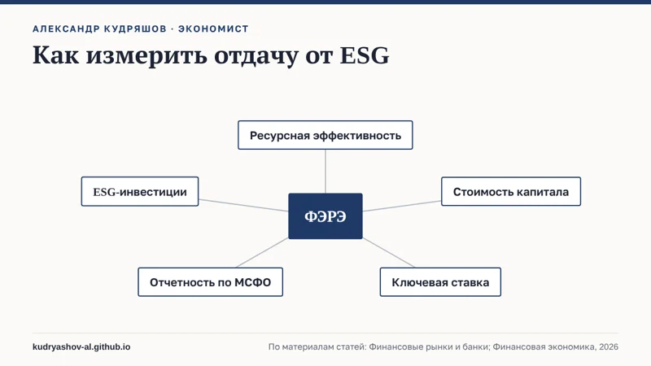
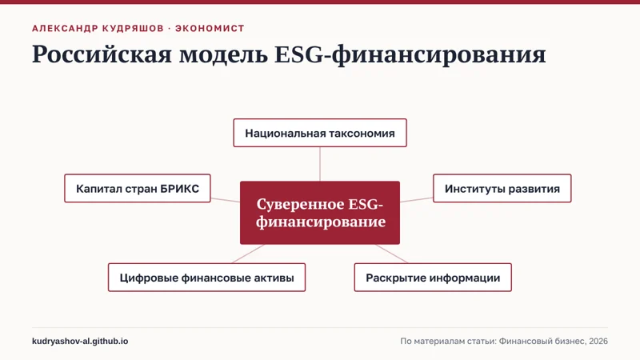
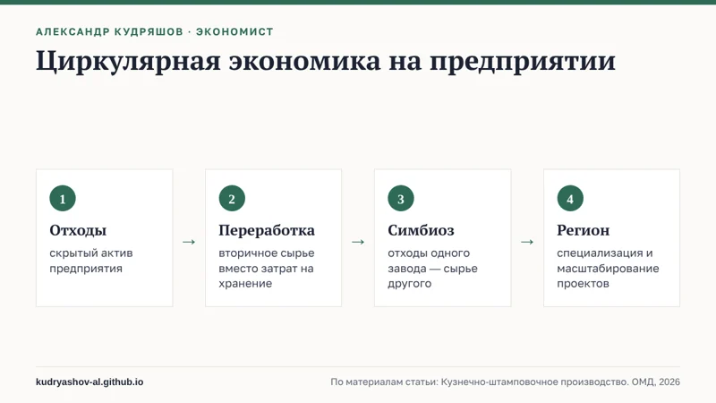

2027
Финансовый рынок России
Основы инвестиционной деятельности субъектов предпринимательства
Кудряшов А. Л. // Предпринимательские финансы : учебник. Москва : КноРус, 2027. С. 304-337
Работ в каталоге: 66.

Финансовая экономика, 2026, № 6Финансово-экономический результат эффективности как комплексный показатель оценки ESG-трансформации российских корпораций
Финансовый бизнес, 2026, № 9Суверенное ESG-финансирование как категория финансовой науки: периодизация развития и институциональное устройство
Кузнечно-штамповочное производство, 2026, № 1Циркулярная экономика и промышленный симбиоз как направления повышения ресурсной эффективности промышленных предприятий регионаКудряшов А. Л. // Предпринимательские финансы : учебник. Москва : КноРус, 2027. С. 304-337
Кудряшов А. Л. // Предпринимательские финансы : учебник. Москва : КноРус, 2027. С. 390-407
Кудряшов А. Л. Монография. Москва : Русайнс, 2026. 232 с. ISBN 978-5-466-13886-3
В монографии оценивается инвестиционная эффективность ESG-трансформации крупнейших российских промышленных организаций пяти отраслей: черной и цветной металлургии, золотодобычи, нефтегазовой отрасли, химии и производства удобрений, электроэнергетики. Для оценки применяется показатель «финансовый эквивалент ресурсной эффективности» (ФЭРЭ), равный отношению приведенного приростного денежного потока, вызванного ESG-трансформацией, к природоохранным инвестициям. Информационную базу составляют консолидированная финансовая отчетность по МСФО и нефинансовая отчетность 14 организаций за 2023–2025 годы.
Кудряшов А. Л. // Финансовые рынки и банки. 2026. № 10. С. 323–326
В статье оценены возможности рынка цифровых финансовых активов (ЦФА) для финансирования проектов устойчивого развития российских компаний. По данным Банка России, рейтинговых агентств и операторов информационных систем рассмотрены динамика и структура рынка ЦФА в 2025 году и первом полугодии 2026 года, единственный подтвержденный выпуск ЦФА устойчивого развития и стоимость привлеченных с его помощью средств. Установлено, что при росте размещений ЦФА до 2,1 трлн руб. за первое полугодие 2026 года сегмент устойчивого развития ограничен одним выпуском объемом 1 млрд руб., а ставка по нему не ниже доходности облигаций эмитентов сопоставимых отраслей, то есть «зеленой» скидки к стоимости заимствования не возникло. Сопоставление с природоохранными капитальными вложениями шести компаний нефинансового сектора (в среднем 80,1 млрд руб. в год за 2023–2025 годы) показывает, что их годовой объем сопоставим со всем объемом ЦФА сроком от одного года, размещенных в 2025 году (81,3 млрд руб.). Сформулированы регуляторные условия развития сегмента, включая распространение мер государственной поддержки и требований к верификации на ЦФА, а также использование возможностей, открываемых Федеральным законом «О цифровых валютах и цифровых правах».
Ключевые слова: дивидендная политика, сглаживание дивидендов, модель Линтнера, санкционная уязвимость, денежно-кредитная политика, компании с государственным участием, БРИКС
Кудряшов А. Л. // Финансовые рынки и банки. 2026. № 10. С. 227–230
Исследована дивидендная политика 41 нефинансовой компании России, Бразилии, Китая и Южно-Африканской Республики в 2021–2025 годах, когда в России действовали высокая ключевая ставка и масштабные санкционные ограничения. Российские компании распределены по трем уровням санкционной уязвимости, критерий которой ранее предложен автором, на основе официальных санкционных списков США, Европейского союза и Великобритании. По модели Дж. Линтнера оценены скорость приведения дивидендов к целевому уровню и целевая доля распределяемой прибыли. Установлено, что российские компании с низкой и средней санкционной уязвимостью сглаживают дивиденды так же, как компании сравнительной группы: скорость корректировки составляет около 0,5. Компании с высокой уязвимостью не поддерживают стабильный уровень дивидендов. Годы с крупными выплатами чередуются у них с годами без выплат, связь с дивидендами прошлого года отрицательна, а размер дивиденда определяется прибылью предыдущего года. Такие компании не выплачивали дивиденды в 44 % наблюдений против 7 % в сравнительной группе. Результаты могут использоваться при планировании дивидендных доходов бюджета от компаний с государственным участием и при оценке акций российских эмитентов.
Ключевые слова: дивидендная политика, сглаживание дивидендов, модель Линтнера, санкционная уязвимость, денежно-кредитная политика, компании с государственным участием, БРИКС
Кудряшов А. Л., Клевцов В. В. // Финансовая аналитика: проблемы и решения. 2026. Т. 19, № 4. С. 54–62. DOI 10.24891/mccfkg. EDN MCCFKG.
На примере российской горно-металлургической организации авторы оценивают, как учесть ESG-риски в бюджете, ставке дисконтирования и резерве на редкие события. Предложенный показатель соотносит ожидаемые потери, регуляторные затраты и учитываемую часть резерва с EBITDA. По отчетности за 2025 год расчетная нагрузка составила 3,3% при сценарной плате за углерод 1 000 руб. за тонну и 4,9% при 2 000 руб. за тонну.
Ключевые слова: ESG-риски, финансовый риск-менеджмент, ожидаемые потери, ставка дисконтирования, резервирование
Кудряшов А. Л. // Экономическое развитие России. 2026. Т. 33, № 10. С. 510–513
Цель исследования состоит в оценке ESG-рисковой нагрузки российских компаний нефинансового сектора и цены выбросов парниковых газов, при которой эта нагрузка становится существенной для их финансового положения. По консолидированной отчетности и отчетам об устойчивом развитии десяти компаний нефтегазовой отрасли, трубопроводного транспорта, электроэнергетики, химической, угольной и металлургической промышленности, алмазодобычи за 2023–2025 годы рассчитано отношение текущих природоохранных затрат и платы за негативное воздействие на окружающую среду к EBITDA. У пяти из семи компаний с раздельным раскрытием затрат наблюдаемая нагрузка не превышает 3,1 % EBITDA, у Мосэнерго в 2025 году достигает 8,5 %, у Распадской в 2024 году 10,4 %. Предложен показатель пороговой цены углерода, при которой нагрузка достигает 5 и 15 % EBITDA. Для тепловой генерации порог составляет десятки и сотни рублей за тонну CO2-эквивалента, для нефтегазовых компаний 0,9–5,9 тыс. руб., для трубопроводного транспорта превышает 35 тыс. руб. При цене 5 000 руб. за тонну нагрузка нефтегазовых компаний достигает 12,8–18,4 % EBITDA, а ранжирование компаний по уязвимости определяется углеродоемкостью операционной прибыли и не зависит от уровня цены. Результаты применимы при оценке климатических рисков заемщиков и при отборе переходных проектов для финансирования.
Ключевые слова: ESG-риски, ESG-рисковая нагрузка, природоохранные затраты, плата за негативное воздействие, выбросы парниковых газов, пороговая цена углерода
Кудряшов А. Л. // Кузнечно-штамповочное производство. Обработка материалов давлением. 2026. № 2. С. 356–362
Трансформация экономической политики РФ в условиях внешнеэкономических ограничений актуализировала поиск эффективных инструментов финансирования промышленного развития территорий. Государственно-частное партнерство выступает институциональным механизмом, обеспечивающим синергию бюджетных и частных инвестиций при реализации проектов технологического суверенитета. Проведена систематизация механизмов ГЧП и мер государственного стимулирования, применяемых для технологической модернизации промышленных предприятий на региональном уровне, а также оценка их результативности в контексте импортозамещения. Установлено, что объем частных инвестиций по проектам ГЧП в 2024 г. достигает 1,6 трлн руб. при доле внебюджетных средств 65 %. Специальные инвестиционные контракты (СПИК 2.0) демонстрируют эффективность в машиностроении, фармацевтике, химической промышленности. Результаты применимы для формирования региональных стратегий промышленного развития и корректировки федеральных программ поддержки.
Ключевые слова: государственно-частное партнерство, импортозамещение, технологический суверенитет, специальный инвестиционный контракт, промышленная политика, региональное развитие
Кудряшов А. Л. // Финансовые рынки и банки. 2026. № 6. С. 427–428
В статье исследуется влияние уровня ключевой ставки Банка России на инвестиционную эффективность ESG-трансформации промышленных организаций реального сектора. Оценка проводится на основе авторского показателя финансового эквивалента ресурсной эффективности (ФЭРЭ), определяемого как отношение приведенной стоимости приростного чистого денежного потока ESG-трансформации к совокупному объему инвестиций. В отличие от расчетов, выполненных для периода жесткой денежно-кредитной политики при ключевой ставке 21%, в настоящей работе оценка проводится для актуальных условий смягчения политики при ключевой ставке 14,5%, действующей на дату подготовки исследования. Расчеты выполнены на материале консолидированной отчетности по МСФО за 2024 год пяти крупнейших промышленных организаций. Установлено, что снижение ключевой ставки с 21 до 14,5% повышает значение показателя ФЭРЭ на 24-25%, а дальнейшее смягчение политики до 10-12% обеспечивает переход большинства организаций в зону безусловной финансовой эффективности. Обоснована целесообразность программ льготного проектного финансирования как инструмента компенсации стоимости капитала.
Ключевые слова: ESG-трансформация, ключевая ставка, денежно-кредитная политика, инвестиционная эффективность, ставка дисконтирования, стоимость капитала
Кудряшов А. Л. // Финансовые рынки и банки. 2026. № 9. С. 325–328
В статье выполнен пересчет показателя финансового эквивалента ресурсной эффективности (ФЭРЭ) для пяти крупнейших промышленных организаций России на данных консолидированной отчетности по МСФО и нефинансовой отчетности за 2025 год при ключевой ставке Банка России 14,0%. Установлено, что переход к новому отчетному периоду и снижение стоимости капитала повысили значения показателя на 11,5-34,5% при неизменном ранжировании организаций, что подтверждает устойчивость методики к смене информационной базы. Выявлена возрастающая роль долгового портфеля как канала «зеленой скидки» и низкая база фактических экологических платежей, ограничивающая соответствующий компонент приростного денежного потока. Сценарный анализ показал, что снижение ключевой ставки до 10% приближает к порогу финансовой эффективности две организации, но не обеспечивает его преодоления без мер государственной поддержки.
Ключевые слова: ESG-трансформация, финансовый эквивалент ресурсной эффективности, ключевая ставка, стоимость капитала, отчетность по МСФО, промышленные организации
Кудряшов А. Л. // Кузнечно-штамповочное производство. Обработка материалов давлением. 2026. № 1. С. 325–332
Статья посвящена исследованию потенциала циркулярной экономики и промышленного симбиоза как механизмов повышения ресурсной эффективности и снижения экологического следа промышленных предприятий российских регионов. Проводится комплексная экономическая оценке возможностей вовлечения техногенных и агропромышленных отходов в хозяйственный оборот и выявлении факторов, определяющих рентабельность симбиотических проектов. Показано, что накопленные техногенные ресурсы в индустриальных центрах (на примере Новокузнецкого промышленного узла) обладают скрытым экономическим потенциалом, сопоставимым с годовыми бюджетами субъектов РФ, однако его реализация ограничена высокими капитало- и энергоемкими издержками переработки. Выявлено, что замещение первичного сырья техногенными материалами в строительной индустрии позволяет снизить себестоимость продукции на 5–6 % и дополнительно генерировать эффект за счет предотвращенных экологических платежей, тогда как в аграрных регионах ключевым направлением становится биоэнергетический симбиоз на основе переработки отходов животноводства в биогаз и органические удобрения с сокращением сроков окупаемости проектов до 4–5 лет. Установлено, что межрегиональная дифференциация тарифов на электроэнергию формирует «карту» инвестиционной привлекательности для энергоемких кластеров рециклинга и предопределяет специализацию территорий, а ужесточение механизмов РОП и повышение ставок экологического сбора радикально меняют финансовые стимулы, трансформируя переработку из добровольной экологической инициативы в условие сохранения рентабельности. Обсуждается роль цифровых платформ и снижения трансакционных издержек как ключевого условия масштабирования промышленного симбиоза и формулируются направления региональной политики по поддержке циркулярных проектов.
Ключевые слова: циркулярная экономика, промышленный симбиоз, ресурсная эффективность, региональная промышленная политика, экологический след
Кудряшов А. Л. // Финансовая экономика. 2026. № 6. С. 57–61
Предложен комплексный показатель финансово-экономического результата эффективности (ФЭРЭ) для оценки ESG-инвестиций корпораций реального сектора в условиях санкционных ограничений. Применен дисконтированный анализ приростного денежного потока по четырем источникам с факторной декомпозицией и сценарным анализом чувствительности к ключевой ставке. Апробация на отчетности по МСФО пяти корпораций дала значения ФЭРЭ от 0,340 до 1,264. Показатель применим в финансовом менеджменте, банковской экспертизе устойчивых кредитов и обосновании мер господдержки.
Ключевые слова: ESG-трансформация, финансовая эффективность, устойчивое финансирование, дисконтированный денежный поток, санкционные ограничения
Кудряшов А. Л. // Финансовый бизнес. 2026. № 9 (279). С. 143–146
В статье обоснована категория «суверенное ESG-финансирование», описывающая стадию развития устойчивого финансирования, на которой национальное государство выступает архитектором рынка, а критерии «зелености», институты верификации и каналы привлечения капитала формируются внутри национальной юрисдикции и дружественных ей объединений. Предложена периодизация эволюции подходов к финансированию устойчивого развития из пяти стадий по критерию доминирующей парадигмы распределения финансовых ресурсов. Раскрыто институциональное устройство суверенного ESG-финансирования в Российской Федерации, включающее национальную таксономию, институты развития, режим раскрытия информации, инфраструктуру цифровых финансовых активов и внешний канал привлечения капитала из стран БРИКС. Показано, что суверенная модель не противопоставляется глобальной, а восполняет утраченный доступ к международной инфраструктуре устойчивого финансирования.
Ключевые слова: устойчивое финансирование, суверенное ESG-финансирование, периодизация, таксономия, институты развития, цифровые финансовые активы
Кудряшов А. Л. // Финансовая экономика. 2026. № 9. С. 41–45
В статье предложена классификация финансовых инструментов стимулирования ESG-трансформации российских организаций по критерию санкционной уязвимости получателя финансирования. Обоснованы три уровня уязвимости и восемь групп инструментов, для каждой пары определена доступность инструмента. Показано, что санкционные ограничения не сокращают перечень инструментов равномерно, а перестраивают его. Рыночные инструменты с международной верификацией выпадают у наиболее уязвимых организаций, тогда как цифровые финансовые активы, субсидирование купонного дохода и налоговые преференции сохраняют доступность на всех уровнях. Предложен алгоритм подбора набора инструментов для организации с заданным уровнем уязвимости, применимый институтами развития при структурировании поддержки.
Ключевые слова: ESG-трансформация, финансовые инструменты, санкционная уязвимость, классификация, «зеленые» облигации, цифровые финансовые активы
Кудряшов А. Л., Колганов В. С. // Вестник евразийской науки. 2026. Т. 18. № 2
Представленная статья посвящена обоснованию дифференцированных организационно-экономических моделей переработки строительных отходов применительно к различным типам регионов Российской Федерации в контексте перехода строительной отрасли к принципам экономики замкнутого цикла. Актуальность исследования определяется острым противоречием между масштабами ежегодного образования отходов строительства, сноса и благоустройства — порядка 97 млн тонн — и крайне низким уровнем их вовлечения во вторичный хозяйственный оборот, не превышающим 13 %. Методологическую основу работы образует комплекс взаимодополняющих подходов: системный и институциональный анализ, сравнительный метод для сопоставления зарубежного опыта, многокритериальное ранжирование технологий переработки и типологический метод дифференциации регионов. Научная новизна работы заключается в разработке трехуровневой типологии регионов Российской Федерации по потенциалу внедрения циркулярных подходов в строительстве. Столичный тип (Москва, Санкт-Петербург) предполагает создание полномасштабной перерабатывающей инфраструктуры с окупаемостью 1,4–2,0 года. Индустриальный тип (города-миллионники Урала и Сибири) ориентирован на аутсорсинговую модель с окупаемостью 2,0–3,5 года. Средний тип (регионы с населением до 1–2 млн человек) наиболее рационально обслуживается мобильными дробильно-сортировочными комплексами и кооперативными схемами с окупаемостью 3–5 лет. Практическая значимость предложенных рекомендаций определяется возможностью их применения органами исполнительной власти субъектов Российской Федерации при формировании региональных программ обращения со строительными отходами в рамках реализации федерального проекта «Экономика замкнутого цикла», предусматривающего достижение доли вторичных ресурсов в строительстве на уровне 40 % к 2030 году.
Ключевые слова: экономика замкнутого цикла, строительные отходы, переработка, региональная дифференциация, вторичные строительные материалы, ресурсосбережение
Кудряшов А. Л., и др. // Горная промышленность. 2026. № 2. С. 206–213
Кудряшов А. Л. // Монография. Москва : Международный центр научных разработок, инноваций и развития образования, 2026. ISBN 978-5-0069-9005-0
Монография посвящена вопросам экономической разведки и противодействия финансовым угрозам в российских компаниях. Исследованы теоретические аспекты защиты корпоративных интересов, источники и признаки финансовых рисков, методы выявления угроз, порядок аналитической оценки и организационные решения по укреплению устойчивости бизнеса. Издание адресовано исследователям, преподавателям, аспирантам, магистрантам и практикам.
Ключевые слова: Экономическая разведка, Финансовая безопасность, Финансовые угрозы, Корпоративное мошенничество, Экономическая безопасность, Управление рисками
Кудряшов А. Л. // Кузнечно-штамповочное производство. Обработка материалов давлением. 2025. № 1. С. 132–141
Данная статья посвящена изучению возможностей использования технологий дата-центров и распределенных систем хранения данных для совершенствования процессов разработки стратегий промышленных предприятий. Проведен всесторонний анализ современных исследований в данной области, который позволяет выявить ключевые тренды и пробелы в изучении проблемы. Предложена авторская терминология для устранения понятийных разночтений. Эмпирическую базу исследования составляют данные о стратегиях 120 крупных промышленных компаний из разных отраслей. С помощью методов статистического и сетевого анализа, а также имитационного моделирования выявлены закономерности влияния характеристик ИТ-инфраструктуры предприятий на эффективность их стратегического планирования. Разработан комплекс практических рекомендаций по оптимизации ИТ-систем промышленных компаний для повышения обоснованности, согласованности и адаптивности их стратегий в условиях динамичной среды. Полученные выводы открывают новые перспективы для интеграции методов стратегического менеджмента и анализа больших данных.
Ключевые слова: промышленные предприятия, стратегическое планирование, дата-центры, распределенные системы хранения данных, большие данные, оптимизация
Валиуллина В. С., Кудряшов А. Л. // Сборник научных трудов. Москва. 2025
В статье рассматривается влияние системы финансового планирования и прогнозирования на обеспечение сбалансированного развития компании. В работе проведен финансовый анализ предприятия строительного сектора города Москвы. Результаты показали противоречивые тенденции в финансовом положении компании: высокие показатели операционной эффективности при низком уровне финансовой устойчивости. В статье определены причины подобного дисбаланса и разработаны рекомендации по совершенствованию системы финансового планирования и прогнозирования. Результаты демонстрируют, что рост прибыльности не решает стратегические проблемы, а только маскирует их. Работа подчеркивает важность системного подхода к финансовому планированию. Результаты исследования могут быть полезны для формирования эффективных систем корпоративного управления.
Ключевые слова: финансовая устойчивость, рентабельность, ликвидность, коэффициентный анализ, структура капитала, операционная эффективность
Макаркина Л. И., Кудряшов А. Л. // Сборник научных трудов. Москва. 2025
Настоящая статья посвящена вопросам совершенствования системы финансового планирования и прогнозирования в компаниях розничной и оптовой торговли текстильной продукцией. В рамках исследования проведен детальный финансовый анализ предприятия отрасли, который выявил уникальный случай исключительно высокой финансовой устойчивости, ликвидности и стабильного роста операционных показателей. Разработаны конкретные рекомендации по стратегическому управлению ликвидностью, инвестиционному планированию, а также повышению точности прогнозирования продаж и запасов. Работа подчеркивает важность системного подхода к финансовому управлению для максимизации доходности и долгосрочного развития даже при отсутствии явных финансовых проблем. Результаты исследования могут служить ориентиром для компаний, стремящихся к повышению эффективности использования капитала и дальнейшему масштабированию бизнеса.
Ключевые слова: финансовое планирование, финансовое прогнозирование, текстильная продукция, розничная торговля, оптовая торговля, финансовая устойчивость
Голованов Р. А., Кудряшов А. Л., Абдухаликов У. А. // Экономика Таджикистана. 2025. № 2. С. 368–376
В современном ресторанном бизнесе, ориентированном на увеличение числа потребителей, повышение конкурентоспособности и поиск каналов роста прибыли, важное место занимают модели инновационного развития. Сегодня, идея открытия мини-пекарни в структуре ресторана уже не является единичным прецедентом, она вытекает из потребности охвата потребителей не только адаптивным к их возросшим запросам ассортиментом продукции, но с внедрением инновационных моделей ресторанного сервиса, повышающим финансовую устойчивость и конкурентоспособность, делает открытие мини пекарни в структуре ресторанного производства достаточно перспективным. В данной статье освещено целевое назначение Бизнес-моделей, связанных с текущим процессом функционирования бизнеса и путях его монетизации.
Ключевые слова: бизнес-модель, мини-пекарня, структура ресторанного бизнеса, инновационное развитие, конкурентоспособность, финансовые риски
Колганов В. С., Овчинников А. Э., Кудряшов А. Л. // Вестник евразийской науки. 2025. Т. 17. № 1S
В статье исследуется динамика развития предпринимательских связей между бизнес-структурами стран БРИКС (Бразилия, Россия, Индия, Китай, ЮАР) с акцентом на исторические предпосылки, современное состояние и перспективы сотрудничества. Развитие глобализированной экономики требует от государств поиска новых путей для усиления своих позиций на международной арене. Одним из ключевых направлений такой деятельности является укрепление экономических связей между странами, объединенными общими интересами. Авторы анализируют ключевые факторы, способствующие укреплению экономических отношений, включая торговлю, инвестиции, технологический обмен и совместные инфраструктурные проекты. Особое внимание уделено роли государственных и негосударственных институтов в поддержке предпринимательства, а также влиянию геополитических изменений на интеграционные процессы в рамках объединения. На примере двустороннего взаимодействия России с Индией и Китаем показана эволюция деловых связей — от исторических торговых маршрутов до современных стратегических партнерств. Отмечается, что товарооборот между странами БРИКС за последнее десятилетие вырос более чем вдвое, а взаимные инвестиции концентрируются в энергетике, высоких технологиях и оборонной промышленности. Подчеркивается значимость таких инструментов, как Банк развития БРИКС и расчеты в национальных валютах, для снижения зависимости от долларовой системы. В статье также рассматриваются барьеры на пути углубления сотрудничества, включая различия в регуляторных рамках, конкуренцию с западными компаниями и логистические сложности. В заключение авторы делают вывод о потенциале БРИКС как платформы для формирования многополярной экономики и предлагают рекомендации по дальнейшему развитию предпринимательских инициатив, таких как расширение программ поддержки МСП и усиление научно-технического сотрудничества.
Ключевые слова: БРИКС, предпринимательские связи, экономическая интеграция, торговля, прямые иностранные инвестиции, международное сотрудничество
Кудряшов А. Л., Шарафяни Г. // Вестник евразийской науки. 2025. Т. 17. № 2S
Представленное исследование раскрывает актуальную проблематику взаимосвязи цифровой трансформации и устойчивого развития современного общества. Авторами успешно разработана и эмпирически верифицирована оригинальная методология, позволяющая комплексно оценивать влияние цифровых преобразований на устойчивость социально-экономических систем. Центральным элементом предложенной концепции выступает авторский интегральный индекс «Цифровая устойчивость» (Digital Sustainability Index — DSI), объединяющий четыре фундаментальных измерения: степень цифровой зрелости, экономическую результативность, социальную справедливость и экологическую ответственность. Методологическая база исследования опирается на синергию системной динамики, ESG-оценки и эконометрического моделирования, что обеспечивает многогранность анализа изучаемого феномена. Эмпирическую основу исследования составили панельные данные по 28 странам за период 2010–2024 гг., которые подверглись комплексной аналитической обработке с применением факторного анализа и регрессионного моделирования. Масштабная выборка, превышающая 1 200 наблюдений, позволила получить статистически значимые результаты, демонстрирующие нелинейный характер влияния цифровизации на параметры устойчивого развития. Особую ценность представляет проведенное моделирование по четырем сценариям развития до 2035 года, позволяющее прогнозировать долгосрочные эффекты различных стратегий цифровой трансформации. Построенные сценарии наглядно демонстрируют, что изолированное внедрение цифровых технологий без соответствующего институционального и образовательного сопровождения может усиливать социальное неравенство и снижать системную устойчивость, особенно в развивающихся регионах. Практическая значимость исследования определяется возможностью применения разработанного индекса DSI для формирования стратегий цифровой трансформации, соответствующих императивам устойчивого развития и учитывающих интересы будущих поколений. Авторы справедливо подчеркивает необходимость синхронизации цифровой и «зеленой» трансформации для достижения долгосрочных целей устойчивого развития.
Ключевые слова: цифровая трансформация, устойчивое развитие, системная устойчивость, эконометрическое моделирование, цифровые технологии, зеленая экономика
Кудряшов А. Л. // Вестник евразийской науки. 2025. Т. 17. № 1S
Цифровизация и глобализация изменяют традиционные подходы к управлению и образованию, что требует пересмотра роли финансового директора и образовательных стратегий. Так поколение Z ожидает от образовательных программ более практико-ориентированного подхода, способного обеспечить конкурентоспособность на рынке труда, а финансовые директора сталкиваются с необходимостью интеграции цифровых технологий, что требует новых компетенций и стратегического мышления. Статья отражает результаты эмпирического исследования студентов, обучающихся по направлению менеджмент в Финансовом университете при Правительстве Российской Федерации. Проведен анализ факторов, оказывающих влияние на трансформацию представлений поколения Z о роли финансового директора в российских компаниях после изучения дисциплины финансовый менеджмент. В статье делается акцент на влиянии изученной дисциплины на изменение понимания роли финансовых специалистов, определение факторов изменения профессиональных установок студентов. Был проведен корреляционный и регрессионный анализ, который позволил сделать обоснованные выводы о влиянии образовательного процесса на формирование профессиональных установок студентов. В статье представлено подробное описание методологии исследования и представлен анализ полученных результатов. Исследование выявило устойчивые корреляции между внедрением практико-ориентированных образовательных моделей и восприятие роли финансовых специалистов. Получены результаты глубоких изменений роли CFO в современных условиях ведения бизнеса. Сформулированы рекомендации для преподавателей высшей школы по совершенствованию образовательных программ, отражающих требования поколения Z. Даны некоторые рекомендации высшему менеджменту компаний для трансформации управленческих ролей финансовых специалистов. Полученные результаты исследования прошли апробацию на международной научно-методической конференцию «Форсайт образования: портрет студента будущего» 31 января 2025 года в ФГОБУ ВО «Финансовый университет при Правительстве Российской Федерации».
Ключевые слова: поколение Z, финансовый директор, менеджмент, студент, образовательные программы, цифровизация
Кудряшов А. Л., и др. // Уголь. 2025. № 4. С. 114–124
Кудряшов А. Л., и др. // Вестник Алтайской академии экономики и права. 2025
Кудряшов А. Л. // Научное сообщество студентов XXI века: экономика, финансы, управление, цифровизация, психология, дизайн, право. сборник материалов VI Межвузовской студенческой научно-практической конференции. Москва, 2025. С. 360-368
Управленческий учет в современных условиях переживает глубокую трансформацию, выходя за рамки традиционного контроля над затратами и становясь инструментом прогнозирования, оптимизации и создания ценности. В данной работе представлен теоретический анализ изменений в системе управленческого учета, произошедших в российских организациях в 2025 году. Выявлено, что ключевыми факторами этой эволюции стали усиление геополитической неопределенности, ограниченность доступа к западным рынкам капитала и технологий, а также рост внутренней потребности в более точной и оперативной финансовой информации. Предложена модель, названная «Управленческий интеллект» (Management Intelligence - MI), которая объединяет элементы аналитики, прогнозирования и ESG-оценки. Анализ проводился на основе данных по 81 российской компании из различных отраслей, с использованием методов панельной регрессии и анализа случайного леса. Результаты показывают, что компании, внедряющие модели MI, демонстрируют на 22% выше адаптивность и на 18% больше инвестиционной привлекательности.
Ключевые слова: Управленческий учет, Аналитика, Цифровизация, Прогнозирование, Esg, Россия
Кудряшов А. Л. // Монография. Москва : Международный центр научных разработок, инноваций и развития образования, 2025
Настоящее исследование посвящено анализу стратегий, барьеров и перспектив устойчивого развития субъектов предпринимательства в странах БРИКС, с учетом недавнего расширения объединения за счет новых членов — Египта, Ирана, ОАЭ, Саудовской Аравии и Эфиопии. В условиях усиления международного давления и роста требований к экологической ответственности все большее значение приобретают ESG-стандарты, корпоративная социальная ответственность и «зеленые» технологии как инструменты долгосрочной конкурентоспособности. Работа основана на анализе данных из официальной статистики, докладов ООН, МОТ, UNDP и национальных программ устойчивого развития. Особое внимание уделено роли государственно-частных партнерств, цифровизации и финансирования малого бизнеса в переходе к устойчивым моделям. Показано, что страны БРИКС демонстрируют разный уровень зрелости в области устойчивого развития: Китай и Индия выступают лидерами, тогда как Россия, ЮАР и новые члены объединения находятся на ранних этапах внедрения ESG-подходов...
Ключевые слова: Устойчивое развитие, Esg-стандарты, Корпоративная социальная ответственность, Малый и средний бизнес, Цифровизация, Государственно-частное партнёрство
Скворцов Д. И., Кудряшов А. Л. // Вестник евразийской науки. 2024. Т. 16. № 3S
В данной статье автор рассматривает проблемы и перспективы нормативно-правового регулирования в сфере финансовой поддержки малого предпринимательства в России. В свете значительного влияния малого бизнеса на экономическое процветание и социальную гармонию страны, обсуждается важность точечной поддержки этого сектора как ответ на глобальные экономические вызовы и стимулирование национального экономического потенциала. Основное содержание статьи ориентировано на анализ текущего состояния законодательства, выявление существующих проблем и разработку направлений для совершенствования нормативной базы. Ведущие методы исследования включают сравнительный анализ, статистический анализ и анализ опыта других авторов. Основная цель исследования состоит в оценке эффективности текущих финансовых инструментов и программ, предоставляемых государством, в контексте поддержки малого бизнеса. Результаты работы должны способствовать формированию предложений по оптимизации законодательной базы, что улучшит доступность и эффективность поддержки малого предпринимательства и окажет положительное воздействие на экономику России в целом. Подчеркивается важность малых предприятий для экономического развития страны, указывая на их роль в инновациях, создании рабочих мест и социальной стабильности. Вместе с тем выделяется множество проблем, связанных с получением финансовой поддержки малым бизнесом, включая устаревание и недостатки законодательства. Результаты исследования указывают на значительное влияние малого предпринимательства на национальную экономику, но также выявляют множество проблем, включающих сложности в доступе к финансовым ресурсам из-за неэффективной нормативной базы. Автор предлагает рекомендации по улучшению законодательства, что может способствовать увеличению эффективности государственной поддержки и стимулировать развитие предпринимательства.
Ключевые слова: малое предпринимательство, финансовая поддержка, нормативно правовое регулирование, перспективы развития, проблемы регулирования, государственная поддержка
Бокиева Р. Д., Кудряшов А. Л. // Вестник евразийской науки. 2024. Т. 16. № 4S
Статья посвящена анализу рынков Индии, Китая, Бразилии. В статье рассматриваются основные аспекты, оценивающие эффективность взаимодействия стран БРИКС. Исследование включает в себя обзор экономической ситуации в Индии, Китае, Бразилии, изучение бизнес-среды, товарооборот между странами. Поставлена гипотеза о возможном увеличении выручки российских компаний при выходе на рынки БРИКС, что повлияет на товарооборот и экономические взаимоотношения. Рассмотрены особенности регистрации компаний в Индии, Китае, Бразилии и их налоговая система. Важно учитывать сложности, связанные с бюрократией, налоговой системой, коррупцией, нормативными требованиями. Исследование дает понимание, что для успешного выхода на рынки Индии, Китая и Бразилии российским компаниям следует адаптировать свои продукты и услуги, строить эффективные маркетинговые стратегии и учитывать особенности каждого рынка. Сотрудничество с компаниями из стран БРИКС представляет потенциал для расширения российского бизнеса на международном уровне. Также проводится анализ экспорта и импорта России и оцениваются перспективы для российских предпринимателей для вывода своего бизнеса на мировой рынок. По результатам проведенного анализа, рекомендуется российским компаниям серьезно рассмотреть возможности выхода на рынки Индии, Китая и Бразилии, с учетом особенностей каждого рынка. Разработка индивидуальных стратегий входа, адаптация продуктов, а также соответствие налоговым требованиям и правовой базе данных стран — ключевые факторы успеха. Обсуждение исследования подчеркивает необходимость для российских компаний учитывать особенности и требования каждого рынка при планировании выхода на эти рынки. Адаптация продуктов и услуг к местным потребностям, разработка эффективных маркетинговых стратегий и соблюдение нормативных требований являются важными факторами для успешного развития бизнеса в этих странах.
Ключевые слова: мировой рынок, БРИКС, Индия, Китай, Бразилия, импорт
Мачкалян А. Н., Кудряшов А. Л. // Вестник евразийской науки. 2024. Т. 16. № 1S
Целью данной статьи является рассмотрение важности развития деловой репутации и оценки ключевых факторов успеха компании. В статье представлены основные понятия и определения, связанные с деловой репутацией, а также указаны факторы, влияющие на ее развитие. Помимо этого, обсуждаются основные принципы оценки ключевых факторов успеха компании и предлагаются практические рекомендации по их определению и улучшению. В статье представлен анализ различных подходов к определению и измерению деловой репутации. Цель управления репутацией заключается в создании положительного восприятия компании со стороны клиентов, партнеров, инвесторов и общественности, что повышает доверие и привлекательность компании на рынке. Особое внимание уделяется влиянию таких факторов, как качество товаров и услуг, инновации, сотрудничество с партнерами, уровень корпоративной социальной ответственности и степень доверия клиентов. Все это позволяет представить комплексный подход к развитию деловой репутации и оценке ключевых факторов успеха компании, что может быть полезно как для новых, так и для уже существующих предпринимателей и менеджеров. Результаты оценки могут помочь компании идентифицировать свои сильные и слабые стороны и принять меры для улучшения ключевых факторов успеха. Постоянное развитие выделенных факторов позволяет строить и укреплять деловую репутацию компании на рынке. Автор подчеркивает, что развитие деловой репутации и оценка ключевых факторов успеха должны быть непрерывным и систематическим процессом. Тщательное и систематическое внимание к этим аспектам помогает компании создать прочную деловую репутацию, достичь хороших результатов и оставаться конкурентоспособной на рынке.
Ключевые слова: деловая репутация, оценка, ключевые факторы, успех компании, развитие, этика
Самохвалов С. В., Кудряшов А. Л. // Вестник евразийской науки. 2024. Т. 16. № 1S
Фондовый рынок становится все более популярным и востребованным местом в связи с рисками потери денежных средств инвесторами, связанными с многими геополитическими событиями, влияющими на экономическую ситуацию страны. Многие люди начинают осознавать, что, вкладывая денежные средства в финансовые инструменты, можно сохранить свои накопления и получать пассивный доход. В России, относительно других стран, фондовый рынок является недооцененным по ряду причин. Поэтому, актуальным становится всестороннее рассмотрение текущего положения фондового рынка РФ и перспектив его развития в ближайшие годы. Научная статья посвящена анализированию и прогнозированию перспектив фондового рынка РФ на протяжении следующих нескольких лет. В ней изучается состояние фондового рынка России в настоящее время, его тенденции, проблемы и основные характеристики. В статье рассматриваются понятия фондового рынка, флоатера и боковика. Раскрывается история становления фондового рынка в РФ. Проанализирован эффект от санкций, наложенных на Россию с 2014 года. Рассмотрены ключевые законы РФ, связанные с развитием фондового рынка страны. Выявлены крупнейшие снижения индекса Московской биржи. Перечислены наиболее популярные финансовые инструменты в будущем. Рассмотрен опыт Ирана в борьбе с санкциями и развитии фондового рынка. Анализируются потенциальные риски, препятствующие развитию отечественного фондового рынка, раскрываются перспективы развития рынка в условиях экономической нестабильности и геополитических факторов. Данная научная статья предназначена для специалистов и исследователей в области финансов, экономики и инвестиций, а также для инвесторов, интересующихся перспективами развития фондового рынка РФ в ближайшие несколько лет.
Ключевые слова: фондовый рынок, акции, облигации, инвестиции, ИИС, санкции
Саргсян А. В., Кудряшов А. Л. // Вестник евразийской науки. 2024. Т. 16. № 1S
В статье представлен анализ инвестиционной деятельности российских фармацевтических компаний в условиях санкций. Этот анализ не только описывает текущую ситуацию на рынке фармацевтики в России на 2024 год, но и включает в себя подробное изучение основных факторов, влияющих на инвестиционные решения компаний. Проведенный анализ включает в себя как внутренние факторы, такие как стратегии роста и финансовое состояние компаний, так и внешние факторы, такие как политическая обстановка и внешнеторговые отношения. Изучены основные российские и зарубежные компании, осуществляющие свою деятельность на рынке фармацевтики в России. Это включает в себя анализ их конкурентных преимуществ, стратегий развития и реакции на изменяющуюся политическую и экономическую среду. Кроме того, особое внимание уделено действиям зарубежных компаний в ответ на введение санкций против Российской Федерации. Это включает в себя оценку их стратегий диверсификации, поиска альтернативных рынков и партнерств с локальными производителями. На основе актуальной информации определены потенциальные последствия для фармацевтической отрасли в России. Это включает в себя анализ возможных экономических и политических последствий санкций, а также возможных сценариев развития ситуации в будущем. Проведена оценка инвестиционных проектов, в том числе их потенциальной рентабельности и рисков, связанных с текущей геополитической обстановкой. Определены основные отраслевые тенденции в области планирования и реализации инвестиционных проектов, включая развитие новых технологий, международное сотрудничество и регуляторную среду.
Ключевые слова: фармацевтический рынок, инвестиционные проекты, объем продаж, тенденции развития отрасли, санкционное влияние, лекарственные препараты
Шомахов К. Р., Кудряшов А. Л. // Вестник евразийской науки. 2024. Т. 16. № 1S
Исследование нацелено на анализ и применение методов искусственного интеллекта с целью прогнозирования финансовых тенденций на основе анализа имеющейся информации, включая, но не ограничиваясь, новостными данными. В статье проведен анализ эффективности алгоритмов машинного обучения и продемонстрирована взаимосвязь между новостными событиями и изменениями на финансовых рынках. Рассмотрены этапы разработки подобной программы, начиная с обучения алгоритмов на обширных наборах исторических данных, включая информацию о финансовых инструментах, экономических и политических событиях. Произведен анализ текущих новостных потоков с использованием подготовленных моделей для прогнозирования как краткосрочных, так и долгосрочных финансовых тенденций. Полученные результаты имеют практическое применение в финансовом секторе, включая обеспечение поддержки инвесторов, аналитиков и риск-менеджеров в процессе принятия обоснованных решений. Автор акцентирует внимание на том, что исходя из анализа существующих научных трудов, можно утверждать, что современные методы и подходы к применению искусственного интеллекта, предложенные исследователями, демонстрируют потенциал для эффективного применения на практике. Кроме того, будут затронуты вопросы точности прогнозов искусственного интеллекта, а также потенциальные ограничения и вызовы, связанные с применением подобных моделей в современных условиях рынка. Статья формирует теоретическую базу для последующих исследований в сфере анализа финансовых данных с применением передовых технологий. В заключении автор подчеркивает, что, учитывая выявленные ограничения и проблемы, разработчики программного обеспечения и пользователи должны быть способны адаптировать свои модели к изменяющимся рыночным условиям, тщательно анализировать результаты и принимать решения, основанные не только на допущениях модели, но и на многочисленных источниках информации.
Ключевые слова: искусственный интеллект, финансовые тренды, машинной обучение, прогнозирование финансовых рынков, анализ данных, финансовая аналитика
Мачкалян А. Н., Кудряшов А. Л. // Вестник евразийской науки. 2024. Т. 16. № 2S
Сложное финансовое положение многих российских авиакомпаний, усугубленное недостатком оборотного капитала и его неэффективным использованием, требует комплексного подхода к реализации антикризисных мер. Реструктуризация долгов, поиск новых источников финансирования, пересмотр контрактов и маршрутов, а также оптимизация логистики и управления запасами могут помочь стабилизировать финансовое положение и повысить устойчивость компаний к внешним шокам. Долгосрочные социальные, политические и правовые изменения привели к нынешнему определению несостоятельности (банкротства). Основополагающие концепции данного института зародились в древности, и в прошлом законы о банкротстве применялись исключительно к физическим лицам. На сегодняшний день сфера определения рисков банкротства насыщена разнообразными методологиями, как отечественными, так и зарубежными. В практике преобладает использование методов, разработанных западными специалистами, что облегчает структурирование и систематизацию исследований в данной области. Основные признаки финансовых трудностей предприятий включают нарушения в управлении финансами, задержки в обороте денежных средств и падение прибыльности операций. В данной статье рассматривается анализ и применение методов антикризисного управления финансами на предприятиях авиационной промышленности, с акцентом на условия угрозы их банкротства. Важность темы обусловлена участившимися финансовыми сложностями, с которыми сталкиваются компании этой отрасли на фоне глобальных экономических неприятностей, включая пандемические ограничения. В исследовании особое внимание уделяется адаптации существующих антикризисных подходов к особенностям авиаотрасли, характеризующейся высокими операционными рисками и необходимостью больших инвестиций в технологии.
Ключевые слова: экономика, финансы, финансовое управление, антикризисное управление, авиационная отрасль, банкротство
Саргсян А. В., Кудряшов А. Л. // Вестник евразийской науки. 2024. Т. 16. № 2S
Роль организационной культуры в развитии бизнеса растет с каждым годом. В настоящее время сильная организационная культура создает социально-экономический климат, который оптимизирует выпуск продукции и эффективность работы компании. Многие фирмы эффективно применяют и совершенствуют свою корпоративную культуру. Менеджеры и специалисты по персоналу обычно недооценивают деловую культуру и направляют свою концентрацию только на корпоративной идентификации, логотипе и дресс-коде, официальном декларировании целей, задач и миссии компании. Менеджеры должны знать, как применять методы организационной культуры для укрепления отношений в команде. Мотивация, обучение, развитие и удовлетворение потребностей сотрудников — все это является частью этого. Регулируя эти элементы, менеджеры могут повысить индивидуальную и организационную продуктивность. Одновременно, путем установления конкретных стандартов и принципов, возможно формировать поведение сотрудников внутри организации. Учитывая динамичные изменения в глобальной и российской экономике, крайне важно эффективно управлять нематериальными ресурсами, включая организационную культуру. Формирование и развитие корпоративной культуры является важнейшим направлением в современном мире. Организационная культура играет решающую роль в формировании траектории роста компании и влияет на ее политику управления человеческими ресурсами. Современные успешные фирмы характеризуются повышенным уровнем культуры, который формируется с помощью целенаправленных усилий, направленных на укрепление духа компании. Важность социально-психологических исследований организационной культуры в нашей стране обусловлена значительными сдвигами в политической и социально-экономической сферах, которые влияют на динамику взаимоотношений между организацией и отдельным человеком.
Ключевые слова: организация, организационная культура, корпоративная культура, бизнес, мотивация, офис
Скворцов Д. И., Кудряшов А. Л. // Вестник евразийской науки. 2024. Т. 16. № 2S
В данной работе осуществляется обзор основополагающих правовых документов, которые определяют векторы пространственного развития в Российской Федерации. Основное внимание уделяется изучению законов, устанавливающих рамки для планирования территорий, строительства и использования земель. В статье подробно рассмотрены правовые основы, управленческие аспекты и инструменты, используемые для регулирования использования земли, строительной деятельности, защиты природы, а также для поддержки развития инфраструктуры и повышения социально-экономического уровня регионов. Исследование охватывает как федеральные законодательные акты, так и правовые инициативы, принятые на уровне субъектов Федерации и муниципалитетов, которые способствуют координированному пространственному развитию на всех уровнях административного управления. Рассматриваются возможности и недостатки нынешней законодательной основы, касающейся размещения территорий и их развития, а также выделяются конфликты и сложности, возникающие в процессе ее исполнения. Анализируя эффективность уже существующих подходов, автор подчеркивает ключевые препятствия и недоработки, мешающие нормальному функционированию управления в этой сфере. Предлагаются пути совершенствования текущих практик, опираясь на анализ иностранных моделей в данной области. Цель данного анализа заключается не только в оценке состояния действующих законодательных аспектов, но и в формулировании конкретных предложений для улучшения стратегий, что, в свою очередь, способствует экономическому и социальному росту национальной экономики. В статье формулируются предложения по улучшению законодательной базы, которая регулирует пространственное развитие в Российской Федерации, с целью увеличения ее эффективности и созданию оптимальных условий для последовательного и сбалансированного развития регионов.
Ключевые слова: стратегия пространственного развития, региональное развитие, законодательство, территориальное планирование, социально-экономическое развитие территорий, государственный контроль
Кудряшов А. Л. // Вестник евразийской науки. 2024. Т. 16. № 3S
В статье проведен анализ особенностей развития промышленного сектора российской экономики в условиях санкционного давления, начиная с 2014 года. В рамках исследования рассмотрены ключевые вызовы и адаптационные стратегии, которые принимают на себя предприятия промышленного комплекса России в ответ на международные экономические санкции. Особое внимание уделяется изменению структуры промышленного производства, мерам государственной поддержки промышленного сектора, а также стратегиям по замещению импорта и развитию экспортного потенциала. Исследование базируется на анализе статистических данных, экспертных оценок и кейс-стади по отдельным промышленным предприятиям, показывающим как промышленные гиганты, так и малые компании адаптируют свою деятельность под новые экономические реалии. Работа выявляет ключевые факторы, которые влияют на устойчивость и динамику роста промышленных предприятий в условиях ограничений. Автор акцентирует внимание на том, что сейчас устойчивая повестка как никогда актуальна и все крупные компании ежегодно увеличивают инвестиции и реализуют различные ESG проекты, несмотря на менее устойчивое финансовое положение. Улучшение этого финансового состояния в совокупности с льготами и программами поддержки, поможет вывести инициативы в рамках устойчивого развития на новый уровень. В результате аннотируемого исследования формируется комплексное представление о том, как развивается российский промышленный сектор, выявляются тенденции и перспективы его развития в сложившихся экономических условиях. Анализ позволяет сформулировать рекомендации по эффективной поддержке и стимулированию промышленного сектора в России.
Ключевые слова: промышленность, санкционное давление, экономическое развитие, мировая экономика, промышленное производство, экономическая отрасль
Кудряшов А. Л. // Вестник евразийской науки. 2024. Т. 16. № 4S
В настоящей публикации исследуется текущее состояние и определяются перспективы финансового рынка в России. Акцентируется внимание на экономических, политических, регуляторных и международных аспектах, которые формируют эти сферы. В статье детально анализируются различные сектора финансового рынка, включая акционерный капитал, рынок долговых обязательств и валютный рынок, и описывается как их текущая динамика, так и историческое развитие. Банк России и Правительство РФ активно участвуют в продвижении развития финансового рынка, однако конечный результат в значительной мере зависит от участвующих субъектов этого рынка. Именно они, действуя в рамках рыночной конкуренции, определяют, как будут трансформированы сбережения в инвестиции, какие сервисы и технологии будут востребованы. Также подробно рассматривается привлекательность российской экономики для инвестиций, исследуя как преимущества, так и риски, связанные с вложениями в данную страну. Важные аспекты для инвесторов, такие как регуляторная среда, налоговая политика, законодательная поддержка, инфраструктура и возможности финансирования подвергаются тщательному обзору. Статья также затрагивает текущие тенденции и стратегии инвестирования, характерные как для иностранных, так и для местных инвесторов, обсуждает возможные риски и выгоды от инвестирования в активы России. Особое внимание уделяется важности доверия и конкуренции между участниками рынка как ключевым элементам его успешного функционирования. В конце предложены рекомендации по улучшению условий для инвестиций и возможности сделать российский финансовый рынок более привлекательным для инвесторов. Изучение этого вопроса представляется актуальным для экономистов, финансовых аналитиков и инвесторов.
Ключевые слова: инвестирование, финансовый рынок, инвестиционный климат, фондовый рынок, финансовые инструменты, макроэкономические показатели
Кудряшов А. Л. // Вестник евразийской науки. 2024. Т. 16. № 2S
Статья посвящена актуальной проблеме поиска баланса между экономическим ростом и экологической устойчивостью в современном мире. В рамках данной статьи рассматриваются особенности устойчивого развития и инвестирования в контексте глобальных вызовов, таких как изменение климата, деградация экосистем и социальное неравенство. В современных условиях, когда мир сталкивается с острыми экологическими проблемами, такими как изменение климата, истощение природных ресурсов и загрязнение окружающей среды, тема устойчивого развития становится особенно важной. Данные вызовы требуют от всех стран мира реформирования своих экономик в направлении большей экологичности и социальной ответственности. Анализируются основные принципы устойчивого развития, включая экологическую, социальную и экономическую составляющие. Статья также исследует различные формы устойчивого инвестирования, от традиционного зеленого финансирования до инвестиций в социальные и цифровые технологии. Акцентируется внимание на том, что многие инвестиционные платформы дают возможность начать заниматься зеленым инвестированием, а также создают партнерства с образовательными платформами для повышения осведомленности населения об ESG и инвестированием в проекты и компании устойчивого развития. При этом одним из преимуществ устойчивых инвестиций является то, что они могут помочь инвесторам достичь долгосрочных финансовых целей, а также оказать положительное влияние на мир. Учитывая текущий глобальный финансово-экономический кризис, вложения в устойчивое развитие могут способствовать восстановлению экономики и созданию устойчивых рабочих мест. В статье представлен обзор ключевых тенденций, рисков и возможностей в области устойчивого развития и инвестирования, основанный на анализе последних исследований и данных. Подчеркивается необходимость перехода к новой модели экономического развития, ориентированной на долгосрочную устойчивость и благополучие будущих поколений.
Ключевые слова: инвестирование, устойчивое развитие, ESG-повестка, экологическая безопасность, экономическое развитие, экономическая интеграция
Кудряшов А. Л. // Вестник евразийской науки. 2024. Т. 16. № 3
В последние годы устойчивое развитие стало одной из ключевых тем в глобальной повестке дня. В России, как и во всем мире, все больше предприятий, организаций и государственных структур обращают внимание на принципы устойчивого развития. Данный анализ направлен на исследование успешных проектов устойчивого развития, реализованных на территории Российской Федерации. В рамках исследования были изучены различные проекты, направленные на экологическую устойчивость, экономическую эффективность и социальное благополучие. В частности, были рассмотрены проекты, связанные с возобновляемыми источниками энергии, устойчивым сельским хозяйством, улучшением городской экологии, а также социальными инициативами, направленными на улучшение качества жизни различных групп населения. Особое внимание уделено ключевым факторам успеха таких проектов, включая стратегическое планирование, государственную поддержку, инновации, а также партнерство между частными и государственными секторами. В результате анализа были выявлены лучшие практики, которые могут быть применены для разработки и реализации дальнейших инициатив в области устойчивого развития. Выводы исследования демонстрируют, что успешные проекты устойчивого развития в России возможны благодаря интегрированному подходу, включающему взаимодействие множества заинтересованных сторон, использование новейших технологических решений и адаптацию международного опыта к местным условиям. Одним из ключевых выводов является факт, что несмотря на различия в социально-экономических и экологических условиях разных регионов России, универсальные принципы устойчивого развития могут быть эффективно адаптированы и реализованы. Настоящий анализ служит полезным инструментом для государственных органов, частных компаний и общественных организаций, стремящихся внести вклад в устойчивое развитие и улучшение качества жизни в России.
Ключевые слова: концепция устойчивого развития, экологическая безопасность, инвестиционные проекты, проекты устойчивого развития, социальные проекты, санкционное давление
Кудряшов А. Л. // Мир науки. Педагогика и психология. 2024. Т. 12. № 3
В статье рассматривается ключевая роль, которую играют университеты в формировании устойчивого будущего, на примере Финансового университета при Правительстве Российской Федерации. Автор отмечает, что через трансформацию организационных структур на пути к устойчивости вузы становятся обладателями ценной теоретической и практической базы, способной быть востребованной научным сообществом и государством. В настоящее время существует мало комплексных исследований по механизму процесса изменений для «устойчивого университета», но существует достаточно исследований, которые описывают частные случаи. К сожалению, доля российских исследований в области устойчивости местных университетов чрезвычайно мала, основной объем, выявленный в ходе обзора литературы, составляют западноевропейские исследования. В статье приводится пример начала движения на пути к устойчивости Финансового университета при Правительстве Российской Федерации. Данная работа ставит целью обратить пристальное внимание на необходимость преобразований российских вузов в контексте устойчивого развития, для формирования и воспитания ответственного потребления и создания благоприятной среды для будущих поколений. Особое внимание уделяется инициативам, направленным на экологическую устойчивость, социальную ответственность и экономическое развитие. В рамках данного исследования приведены примеры успешных проектов и сотрудничества с внешними организациями, что демонстрирует вклад университета в достижение целей устойчивого развития. Акцент сделан на необходимости междисциплинарного подхода и активного участия студентов и преподавателей в процессах устойчивого развития. Работа подчеркивает значение университетов как центров инноваций и лидеров в пропаганде устойчивых практик на местном и глобальном уровнях.
Ключевые слова: устойчивое развитие, университеты, экологическая устойчивость, социальная ответственность, экономическое развитие, финансовый университет
Кудряшов А. Л. // Вестник евразийской науки. 2024. Т. 16. № 2
В настоящей публикации исследуются актуальные инвестиционные стратегии, направленные на развитие проектов в области устойчивого развития в России. В фокусе внимания — анализ государственных программ, частных инициатив и международных фондов, направленных на финансирование экологических, социальных и управленческих проектов. Отмечается, что если для прямых инвестиций важность принципов ESG ближе, более понятна, осязаема и практична, то для инвесторов портфельных (крупных) и институциональных, включая суверенные фонды, тема этих рисков стала актуальной только в последнее десятилетие. Особое внимание уделяется механизмам привлечения инвестиций, включая зеленые облигации, социальные инвестиции и венчурный капитал. Анализируются преимущества и риски различных инвестиционных инструментов, выделяя ключевые драйверы устойчивого развития в России. В статье представлен обзор успешных кейсов, а также предлагаются рекомендации по созданию привлекательной инвестиционной среды для проектов, ориентированных на экологическую устойчивость, социальную справедливость и экономический рост. Акцентируется внимание на том, что решение проблем в области национального нормативно-правового регулирования финансирования проектов устойчивого развития является одной из ключевых задач для развития этого рынка. Помимо этого, в статье подчеркивается, что введенные санкционные ограничения со стороны недружественных государств в отношении российских компаний и их последствия для национальной экономики обострили уже существовавшие проблемы, которые препятствовали росту объемов инвестиций в ESG-проекты. Указывается, что, заранее зная возможные проблемы, организация сможет не только разработать более устойчивый и успешный в ESG проект, но и таким образом создаст новое направление в своем бизнесе, которое в полной мере сможет реализовать на деле описанные выше преимущества.
Ключевые слова: инвестиции, инвестиционные стратегии, устойчивое инвестирование, концепция устойчивого развития, инвестиционные проекты, экономическое неравенство
Кудряшов А. Л. // Мир науки. Педагогика и психология. 2024. Т. 12. № 2
В рамках представленной статьи автор изучает роль высших учебных заведений (ВУЗов) в продвижении устойчивого развития. Вузы рассматриваются как генераторы знаний и инноваций, а также как организации, обучающие будущих лидеров. Автор отмечает, что глобальные проблемы, такие как климатический кризис, социальное неравенство и бедность, требуют активного участия университетов. В статье анализируется историческое развитие концепции устойчивого развития, начиная с доклада Брундтланд и включающего Цели устойчивого развития ООН. Обсуждаются подходы к интеграции устойчивости в университетской среде, необходимость органических изменений в институтах и на организационном уровне. Автор подчеркивает важность междисциплинарных и целостных подходов для достижения устойчивого развития, а также указывает на роль университетов в формировании социальных норм и практик, способствующих устойчивости. В условиях глобальных вызовов, таких как изменение климата, социальное неравенство и истощение природных ресурсов, роль университетов в продвижении устойчивого развития становится все более значимой. Настоящая работа посвящена исследованию роли современных университетов в реализации принципов устойчивого развития. Университеты могут выступать в качестве агентов перемен, способствуя развитию экологической ответственности, социальной справедливости и экономической жизнеспособности. Данная статья основывается на анализе современных инициатив и проектов, реализуемых ведущими университетами мира, а также на примерах лучших практик. Выводы исследования подчеркивают важность интеграции устойчивого развития в стратегическое направление университетов для формирования нового поколения профессионалов, готовых ответственно подходить к решению глобальных проблем.
Ключевые слова: устойчивое развитие, высшие учебные заведения, экологические проблемы, социальное неравенство, институциональные изменения, организационные изменения
Кудряшов А. Л., и др. // Горная промышленность. 2024. № 5S. С. 130–136
Кудряшов А. Л. // Управленческие науки в современном мире. сборник докладов XI Международной научно-практической конференции. Санкт-Петербург, 2024. С. 116-119
В современном мире цифровая трансформация приобретает решающее значение. Она связана и с государством, и с сообществами, и, конечно, с бизнес-структурами. Успешность бизнеса теперь определяется не только способностью производить и продавать максимальное количество продукта, но и использовать материальные и нематериальные ресурсы более ответственно для сохранения устойчивости бизнеса в условиях нестабильности. Главным фактором бизнес-лидерства в настоящее время является внедрение цифровых технологий в процессы управления и производства. Данная инновация положительно принимается компаниями, но требует взвешенного решения в определении путей реализации, так как связана не только с технологическими возможностями, но и человеческими ресурсами организации.
Ключевые слова: Цифровые технологии, Цифровизация, Бизнес-процессы, Цифровая среда, Digital technologies, Digitalisation
Кудряшов А. Л., Кобзев Е. А. // Вестник евразийской науки. 2023. Т. 15. № 1S
В данной научной работе авторами разработан механизм внедрения перспективных мероприятий, относящихся к процессу минимизации рисков, связанных с корпоративным мошенничеством, а также даны рекомендации по его внедрению в управленческую практику предприятий. Авторами были обоснованы направления, касающиеся предупреждения проявлений корпоративного мошенничества в организациях, в частности откатов и искажения финансовых результатов. Особо была отмечена роль системы внутреннего контроля, которая способна значительно повысить эффективность мониторинга в области прогнозирования фактов корпоративного мошенничества. Вследствие этого авторами были изучены структурные элементы системы внутреннего контроля, а также выделены задачи, которые данная система способна решать в аспекте функционирования организации. Был разработан алгоритм для осуществления противодействия корпоративному мошенничеству. При этом было выделено 4 этапа, каждый из которых предполагает четкие предписания, соблюдение которых позволит проводить успешную политику по минимизации корпоративного мошенничества в организациях. Важным элементом противодействия корпоративному мошенничеству, по мнению авторов, является усовершенствование кодекса корпоративной этики, основная цель которого — регулирование корпоративных отношений между сотрудниками на различных уровнях взаимодействия. Исходя из этого, в данной статье описан механизм взаимосвязи между кодексом корпоративной этики в организации и корпоративной культурой. По мнению авторов, корпоративная культура является одним из основных индикаторов эффективности указанного кодекса. Корпоративная культура предполагает, что действия, направленные на повышение ее уровня, должны исходить от всех членов организации, начиная от генерального директора, заканчивая рядовыми сотрудниками.
Ключевые слова: корпоративное мошенничество, система внутреннего контроля, корпоративная культура, внутренний аудит, кодекс корпоративной этики, финансовые риски
Валеев К. А., Кудряшов А. Л. // Вестник евразийской науки. 2023. Т. 15. № 2S
В статье исследуется деятельность малого и среднего бизнеса и его влияние на экономическое развитие Московской области и страны в целом. В работе анализируются пути влияния предприятий на экономику страны, из которых наибольшее внимание уделяется инновационному производству. По мнению автора важным аспектом является определение основных концепций и теорий, связанных с участием малого и среднего предпринимательства в развитии инноваций, так как полученные данные поспособствуют большему пониманию роли субъектов малого и среднего предпринимательства в инновационном процессе. Автором изучаются основные проблемы, с которыми сталкиваются предприятия малого и среднего бизнеса при внедрении новшеств, анализируются данные о финансовых результатах и инновационной деятельности ряда компаний — представителей малого и среднего бизнеса в Московской области, на основе которых сформулированы выводы о степени значимости малого и среднего предпринимательства в развитии инновационного производства данного региона и успешности их деятельности. На основе анализа успешно реализовавших свой инновационный потенциал субъектов малого и среднего предпринимательства, автором приводятся причины успеха данных компаний, выделенные на основе их сравнительного анализа, а также предполагаются некоторые возможные способы переноса выявленных критериев на другие предприятия для обеспечения эффективности и стимулирования их инновационной деятельности. Помимо анализа фактических данных, полученных из официальных источников, в том числе с сайтов Министерства экономического развития Московской области и Правительства Московской области, исследование также основывается на анализе литературных источников, включающих в себя как российские, так и зарубежные научные статьи. Результаты проведенного автором исследования показывают, что основными проблемами, с которыми сталкиваются малого и среднего предпринимательства Московской области, являются высокие налоги и бюрократические барьеры, а также ограниченный доступ к финансовым ресурсам и недостаточная поддержка со стороны государства, однако, основываясь на зарубежном опыте и анализе успешной инновационной деятельности некоторых субъектов малого и среднего предпринимательства, при наличии соответствующих мер поддержки, малый и средний бизнес в Московской области имеет значительный потенциал для развития. В заключении рассматриваются возможные перспективы и направления исследования в данной области.
Ключевые слова: малое и среднее предпринимательство, инновации, экономическое развитие, Московская область, финансовая поддержка, региональные программы
Шарафяни Г., Кудряшов А. Л. // Вестник евразийской науки. 2023. Т. 15. № 3S
Строительная отрасль постоянно развивается, несмотря на сложности и риски, связанные с реализацией проектов. Чтобы продолжать рост и удовлетворить растущие потребности, связанные с урбанизацией, отрасль внедряет различные новые тенденции и технологии, одним из является информационное моделирование зданий. В данной статье рассмотрены вопросы инновационного развития предприятий на конкурентном рынке строительных компаний на основе внедрения новой технологии BIM. BIM-технологии (BIM — Building Information Modeling) это комплексная методология проектирования и управления жизненным циклом зданий и сооружений, которая основывается на создании трехмерной модели объекта, содержащей всю необходимую информацию о его конструкции, функциональности, строительном процессе и техническом обслуживании. В работе раскрыты возможности использования новой технологии проектирования и строительство на примере внедрения в одну из компаний функционирующей на рассматриваемом рынке, которая станет единственной и уникальной в Грузии. Выбор механизма обусловлен стремлением показать привлекательность технологии на примере компании, которая будет функционировать с использованием инновационной технологией. В статье проведен анализ существующих практик внедрения и использования инновационных технологий в строительной отрасли в разных развивающихся странах. Республика Грузия является быстро развивающейся страной, за последние годы она стала привлекательной для иммигрирующего населения, соответственно спрос на жилье вырос, а предложения осталось на прежнем уровне. Строительные компании не были готовы к такому большому притоку иммигрантов, который был обусловлен внешними геополитическими изменениями. Особенно с нехваткой жилья сталкиваются в период туристического периода.
Ключевые слова: BIM-технологии, инновации, инвестиции, экономика, оптимизация процессов, строительство
Кудряшов А. Л., Сухова С. К. // Вестник евразийской науки. 2023. Т. 15. № 2S
В условиях глобальной повестки устойчивого развития и мирового курса на декарбонизацию компании и государства находятся в поиске оптимальных ESG-стратегий и инструментов их реализации. Ценообразование на углерод является одним из наиболее эффективных механизмов для уменьшения интенсивности выбросов парниковых газов как на национальном, так и корпоративном уровне. Более 2000 компаний по всему миру включили в свои ESG-стратегии практику введения внутренней цены на углерод, которая положительно сказывается на экологических показателях организации, повышает устойчивость цепочек поставок и прозрачность проводимой политики устойчивого развития в компании. В работе изучается использование внутренней цены на углерод (ВЦУ) как инструмента корпоративных ESG-стратегий отечественных и зарубежных компаний. В результате были обобщены теоретические подходы к описанию параметров ВЦУ: определены и классифицированы основные параметры цены, дано описание методам ее установления и методам использования при принятии управленческих решений компаний. В ходе исследования выявлены ключевые тенденции и особенности, присущие внутренней цене на углерод российских предприятий: дана динамика внедрения ВЦУ в России, определены основные отрасли, внедряющие данный инструмент, а также проведено сравнение структурных характеристик внутренних цен на углерод как инструмента ESG-стратегии отечественных и иностранных компаний, сделаны выводы о различии в подходах. Кроме того, даны рекомендации по повышению эффективности внедрения и использования внутренних цен на углерод внутри коммерческих организаций и отдельно сформулирована концепция имплементации этого инструмента для достижения национальных целей устойчивого развития.
Ключевые слова: внутренняя цена на углерод, ESG-стратегия, устойчивое развитие, углеродное регулирование, принятие управленческих решений, декарбонизация
Закоян Г. А., Кудряшов А. Л. // Вестник евразийской науки. 2023. Т. 15. № 2S
В статье рассмотрен вопрос определения значимости использования ESG-принципов (environmental, social, and governance) высшими учебными заведениями для инновационного развития России. Автором рассмотрены основы ESG, где определены основные принципы и их значимость для высших учебных заведений, их применение в высшем образовании, с целью улучшения управления университетами, повышения стандартов преподавания в высшем образовании и их использование в исследовательской деятельности университетов. Особое внимание уделено ESG-принципам в контексте привлечения венчурных инвестиций, где определено их значение для инвесторов, ориентированных на устойчивость. Инвесторы все больше обращают внимание на то, как компании управляют своим воздействием на окружающую среду, какие социальные и нравственные проблемы они решают, а также на прозрачность и эффективность их управления. Применение данного явления в высшем образовании для привлечения венчурных инвестиций, где фокус внимания направлен на интегрирование ESG-принципы для дальнейшего повышения качества исследовательской деятельности, развитие структуры управления университетами и повышение качества образования на их основе. Автором выделены преимущества использования ESG-принципов и угрозы при их внедрении: улучшение репутации и представления компании на рынке, рост ценности компании, препятствия для внедрения ESG-принципов в высшем образовании, а также необходимость создания новых стандартов для их внедрения. По мнению автора, внедрение принципов ESG высшими учебными заведениями России — это необходимый шаг для обеспечения успешного инновационного развития страны и создание благоприятного инвестиционного климата. В заключительной части статьи автором сформулированы выводы относительно эффективности внедрения ESG-принципов российскими учебными заведениями.
Ключевые слова: высшее образование, ESG-принципы, венчурные инвестиции, инновации, государство, исследовательская деятельность
Кудряшов А. Л. // Вестник евразийской науки. 2023. Т. 15. № 1
Прямые иностранные инвестиции являются важным фактором экономического роста и развития для многих стран, и Россия в этом не является исключением. Однако с 2014 года Россия находится под санкционным давлением, что негативно сказалось на ее экономическом росте, в том числе на притоке прямых иностранных инвестиций. Это исследование призвано проанализировать влияние санкций на прямые иностранные инвестиции в российской финансовой системе и дать представление о текущем состоянии и потенциальном будущем прямых иностранных инвестиций в России. Результаты показывают, что введение санкций против России оказало негативное влияние на экономический рост страны и приток прямых иностранных инвестиций, особенно в финансовый сектор. Исследование выявило, что санкции создали неопределенную деловую среду, увеличили стоимость ведения бизнеса в России и негативно повлияли на доверие инвесторов. В результате в последние годы приток прямых иностранных инвестиций в Россию значительно сократился, особенно в финансовом секторе. Несмотря на проблемы, связанные с санкциями, в российской финансовой системе все еще есть возможности для прямых иностранных инвестиций. Автор приходит к выводу, что Россия обладает значительным потенциалом для прямых иностранных инвестиций благодаря своим богатым природным ресурсам, квалифицированной рабочей силе и стратегическому положению. Кроме того, российское правительство предприняло шаги по привлечению прямых иностранных инвестиций и улучшению инвестиционного климата в стране. Кроме того, российская финансовая система претерпела значительные реформы, включая введение новых правил и модернизацию ее инфраструктуры. Исследование выявило несколько проблем для прямых иностранных инвестиций в российской финансовой системе, таких как коррупция, политическая нестабильность и слабая правовая база. Автор предполагает, что российское правительство должно решить эти вопросы, чтобы улучшить инвестиционный климат в и привлечь больше прямых иностранных инвестиций.
Ключевые слова: прямые иностранные инвестиции, российская финансовая система, инвестиционный климат, санкции, экономические санкции, банковская система
Багдасарян Г. Ф., Кудряшов А. Л. // Вестник евразийской науки. 2023. Т. 15. № 2S
Данная публикация посвящена исследованию особенностей кибербезопасности в современных условиях. В настоящее время в связи с активным развитием цифровых технологий участились случаи осуществления кибератак на предприятия малого и среднего бизнеса. Автор акцентирует внимание на том, что эти действия не только наносят ущерб бизнесу, но и становятся причиной серьезного вреда репутации компании в глазах клиентов и партнеров. Значимость данной проблемы, по мнению автора, обусловлена тем, что сейчас на первый план выходит репутация предприятий, от чего зависят финансовые показатели отдельно взятой компании. При использовании компанией в своей деятельности информационных технологий она может подвергнуться кибератаке со стороны мошенников, что влечет за собой утечку персональных данных сотрудников и клиентов компаний. В работе приведен перечень отраслей бизнеса, которые наиболее подвержены кибератаками. Для формирования более полного понимания в статье проанализированы результаты исследования, которое было сделано российскими компаниями, занимающимися разработками решений для информационной безопасности. Помимо этого, автор определяет основные причины уязвимости в кибербезопасности малого и среднего предпринимательства. Отмечается, что защита информации в малом и среднем предпринимательстве является важной задачей, так как предприятия могут подвергаться различным угрозам, включая кибератаки, кражу данных, вирусы и другие виды киберугроз. Анализируя сущность кибератак и особенности их осуществления, автор утверждает, что человеческий фактор также является причиной кибератак на предприятия. Для решения данной проблемы необходимо систематически проводить инструктаж и обучение сотрудников основам кибербезопасности.
Ключевые слова: цифровизация, цифровые технологии, инновации, кибербезопасность, кибератаки, малый и средний бизнес
Глебов Г. О., Кудряшов А. Л. // Вестник евразийской науки. 2023. Т. 15. № 2S
В статье рассмотрено актуальное состояние российского сельского хозяйства, а также современные тенденции данной отрасли. Определены границы зеленой экономики и современные примеры использования зеленых технологий в зарубежных странах. В статье приведены показатели развития сельскохозяйственной отрасли России и выявлены основные проблемы отрасли. В публикации затрагивается тема ограничивающих факторов, препятствующих развитию сельского хозяйства в России. Рассмотрена тема соответствия федеральной научно-технической программы развития сельского хозяйства России современным мировым тенденциям интенсификации процессов становления высокотехнологического уклада в сфере сельского хозяйства. В статье изучены успешные примеры применения экологически чистых технологий в других странах и перспективные инновации, которые можно использовать в России для повышения эффективности сельского хозяйства. Даны примеры положительных изменений в мире и экономических выгод от перехода на экологически чистое сельское хозяйство, которое может стать стимулом для изменения ситуации в России. Особое внимание автором уделено технологии мониторинга и удобрения почв с помощью беспилотных летательных аппаратов. Проведен анализ эффективности внедрения дронов в сельскохозяйственную практику компании Syngenta путем оценки показателей из отчета о проделанной работе Syngenta и отчета о финансовых результатах компании Syngenta за 2017–2021 гг. Обоснована целесообразность форсирования перехода сельского хозяйства России на новую технологическую ступень развития. Проблема конверсии военных производств БПЛА на гражданские пока изучена мало, поэтому требует дальнейших научных исследований. Выдвинуты предложения по трансформации проводимой политики в сфере сельского хозяйства.
Ключевые слова: зеленая экономика, циркулярная экономика, АПК, сельское хозяйство, НИОКР, экстенсивный рост
Кудряшов А. Л. // Монография. Таллин : Open European Academy of Public Sciences, 2023. ISBN 978-9916-4-1696-9
The monograph delves into the notion of Environmental, Social, and Governance (ESG) factors and their pivotal role in achieving sustainable development. In recent years, ESG has gained significant traction as a yardstick for evaluating a company's non-financial performance. Stakeholders and investors alike are increasingly acknowledging the significance of ESG factors in risk management, stakeholder engagement, and creating long-term value. The paper explores the key trends and challenges in the current business environment, such as the proliferation of ESG reporting standards, the need for more standardized and comparable ESG data, and the importance of stakeholder participation in ESG policy implementation decisions.The author underscores the alignment between sustainable development goals and ESG factors in corporate activities. The study provides examples of successful ESG implementation by companies from diverse economic sectors.The theoretical foundation of ESG is examined, outlining its core principles and the link between ESG and corporate performance...
Ключевые слова: Sustainable development, Esg concept, Esg implementation, Sanctions, Esg transformation, Russian economy
Голованов И. Д., Кудряшов А. Л. // Humanitarian and Socio-economic Sciences Journal. 2022. № 1 (18). С. 61–64
Пандемия Covid-19 изменила мир и повлияла на все сферы жизни общества, особенно банковский сектор. Многие ожидали, что финансовая устойчивость российских банков не выдержит натиск резкого экономического кризиса. Однако анализ ключевых и специфических показателей не позволяет сделать таких однозначных выводов. The Covid-19 pandemic has changed the world and affected all spheres of society, especially the banking sector. Many expected that the financial stability of Russian banks would not withstand the onset of a severe economic crisis. However, the analysis of key and specific indicators does not allow such unambiguous conclusions to be drawn.
Ключевые слова: пандемия Covid-19, банки, отчетность, анализ, ключевые финансовые показатели, финансовая устойчивость, Covid-19 pandemic, banks, reporting, analysis, key financial indicators, financial stability
Кудряшов А. Л. // Отходы и ресурсы. 2022. Т. 9. № 4
В статье рассматривается концепция экологических, социальных и управленческих факторов (ESG) и их значение для устойчивого развития. В последние годы данная концепция приобрела значительную популярность в качестве основы для оценки нефинансовой деятельности компаний, при этом инвесторы и стейкхолдеры все больше осознают важность факторов ESG в создании долгосрочной стоимости, управлении рисками и взаимодействии с заинтересованными сторонами. В работе исследуются ключевые тенденции и проблемы в текущей бизнес-среде, такие как распространение форм отчетности, потребность в более стандартизированных и сопоставимых данных о факторах ESG, а также важность участия стейкхолдеров в принятии решений по реализации политик ESG. Автор подчеркивает соответствие между целями устойчивого развития и ESG факторов в деятельности компаний. Исследуется теоретическая основа концепции ESG с изложением ключевых принципов, а также связь с корпоративной эффективностью...
Ключевые слова: Устойчивое развитие, Концепция esg, Внедрение esg, Санкции, Трансформация esg, Российская экономика
Кудряшов А. Л. // Humanitarian and Socio-Economic Sciences Journal. 2021. № 6 (17). С. 9-12
В настоящее время возрос интерес к оценке способности людей понимать финансовые концепции и безопасно управлять сбережениями и инвестициями, что часто называют «финансовой грамотностью». Этот интерес основан на важности сбережений и планирования для достижения экономического благополучия на протяжении всей жизни и на установленном факте, что в настоящее время люди сталкиваются со все более сложными финансовыми продуктами и услугами.
Ключевые слова: Финансовая грамотность, Образование, Уровень знаний, Финансовое консультирование, Financial literacy, Education
Кудряшов А. Л. // Humanitarian and Socio-Economic Sciences Journal. 2021. № 6 (17). С. 91-101
За последнее десятилетие финансовая грамотность населения стала важным вопросом для правительства Российской Федерации. Финансовая грамотность имеет решающее значение для граждан, как эффективное знание для преодоления будущих последствий демографических изменений, прежде всего таких, как старение и низкие темпы воспроизводства населения, что, в свою очередь, находит отражение этого тренда и в развитых странах. Необходимость владения минимальными знаниями в области управления личными финансами также связано с усложнением финансовых рынков и распространением новых финансовых технологий. Финансовая грамотность является необходимым требованием обеспечения финансовой доступности, способствуя стимулированию экономического роста и улучшения благосостояния населения.
Ключевые слова: Финансовая грамотность, Финансовая доступность, Уровень знаний, Оэср, Financial literacy, Financial inclusion
Кудряшов А. Л. // Фундаментальные и прикладные научные исследования (МКФПНИ). 2021. № 4. С. 86-97
Семейный бизнес оказывает заметное влияние на экономику, поэтому значение семейного бизнеса бесспорно велико. В настоящее время конкуренция и глобализация снижают устойчивость семейного бизнеса. Такая ситуация вредит семейному бизнесу и экономике в целом. Стратегическое управление стало необходимостью в современном мире, где конкуренция растет и глобализируется постоянно. Стратегическое управление применяется для обеспечения долгосрочного планирования практически во всех секторах экономики. Семейный бизнес также может достичь целей в долгосрочном планировании с помощью применения стратегического управления своими предприятиями.
Ключевые слова: Стратегия, Семейный бизнес, Стратегический менеджмент, Институционализация, Strategy, Family business
Кудряшов А. Л. // Монография. Таллин : Open European Academy of Public Sciences, 2019. ISBN 978-1-0921-5248-8
Macroeconomics is ubiquitous and nobody questions its importance.Understanding economic developments – making sense of the mass of data, debate, and commentary produced every day – is difficult even for experts. It is especially challenging for those whose jobs or studies require that they can critically evaluate macroeconomic developments and policies, who have some university-level training, but who have not had practical experience in economic analysis. Our premise is that reporting and debate on macroeconomics can be made understandable if the nderlying issues are placed in a broad analytical framework on which economists generally agree and which has immediate relevance to real-world settings.
Ключевые слова: Macroeconomics, Macroeconomic developments and policies, Economists generally
Кудряшов А. Л. // Humanitarian and Socio-Economic Sciences Journal. 2019. № 5 (16). С. 44-53
Многие компании в последние годы все чаще сталкиваются с глобальными вызовами, влияющими на устойчивость организации, способствуя переосмыслению своих основ и, иногда, целей и бизнес-моделей. Финансовое благополучие фирмы не является одной экзистенциальной угрозой, а связано также с необходимостью обеспечения безопасности сотрудников, сохранению ценности для потребителей и еще более тесном взаимодействии с поставщиками, государством и обществом в целом. Эти факторы могут создавать угрозу для формирования ценности организации в будущем. Реакция бизнеса на эти угрозы будет формировать суждения инвесторов и общества о компании в ближайшие годы.
Ключевые слова: Нефинансовые показатели, Финансовый директор, Ценность бизнеса, Устойчивость компании, Стейкхолдеры, Cfo
Кудряшов А. Л. // Academy Journal. 2018. № 9 (11). С. 9-26
В данной статье рассматривается история управленческого учета и контроля, не претендуя на исчерпывающий характер. Цель состоит не в том, чтобы зайти слишком далеко в исследовании истории управленческого и бухгалтерского учета, а в том, чтобы дать обзор того, как управленческий учет и контроль эволюционировали с течением времени. Это направлено на то, чтобы выявить, где текущие проблемы систем управленческого контроля находят свое происхождение и образуют единое целое. С этой целью данная статья построена вокруг трех тем, которые охватывают три эпохи и области мышления в понимании управленческого учета.
Ключевые слова: Управленческий учет, Бухгалтерский учет, История, Философия, Management accounting, Accounting
Кудряшов А. Л. // European science. 2017. № 5 (27)
В статье рассмотрены теоретические и методологические основы региональной транспортной инфраструктуры через определение теоретических концепций самого понятия «инфраструктура» как особой экономической системы. Анализируя публикации зарубежных и отечественных авторов, можно сделать вывод о существовании различных взглядов, так как становление теоретических концепций проходило неодинаково, а понимание сущности инфраструктуры претерпевало изменения в связи с трансформацией экономических систем.
Ключевые слова: ИНФРАСТРУКТУРА, РЕГИОНАЛЬНАЯ ИНФРАСТРУКТУРА, ТРАНСПОРТНАЯ ИНФРАСТРУКТУРА, ФОРМИРОВАНИЕ РЕГИОНАЛЬНОЙ ТРАНСПОРТНОЙ ИНФРАСТРУКТУРЫ, ОТРАСЛЬ ХОЗЯЙСТВА
Кудряшов А. Л. // Аллея науки. 2017. Т. 4. № 10. С. 424-435
В статье рассматриваются основные экологические факторы, возникающие в процессе деятельности различных видов транспорта и функционирования транспортной инфраструктуры, оказывающие влияние на безопасную среду обитания человека и животных; также рассмотрены и классифицированы возможные экономические факторы, влияющие на доходы и убытки общества и бизнеса, связанные с развитием транспорта и транспортных систем. The article considers the main environmental factors that arise in the process of activities of various modes of transport and the functioning of transport infrastructure that affect the safe environment of human and animal habitat; Also considered and classified possible economic factors affecting the income and losses of society and business associated with the development of transport and transport systems.
Ключевые слова: Транспортная инфраструктура, Экология транспорта, Загрязнение окружающей среды, Ущерб от транспортных средств, Изменение климата, Экономика транспорта
Кудряшов А. Л. // Экономика и управление: вчера, сегодня, завтра. 2017. № 9. С. 135-147
В данной статье рассматриваются некоторые теоретические основы влияния транспортной инфраструктуры на экономику региона. На основании официальных статистических данных проводится выборочный анализ социально-экономических показателей города Москвы. Анализируя ключевые результаты Государственной программы города Москвы «Развитие транспортной системы» на 2012-2016 годы и на перспективу до 2020 года», делаются выводы о достигнутых фактических показателях за период 2013-2015 гг.
Ключевые слова: Транспортная инфраструктура, Регион, Город москва, Развитие транспортной системы, Transport infrastructure, Region
Ничего не найдено. Попробуйте другой запрос.
Оценка инвестиционной эффективности ESG-трансформации и ESG-рисковой нагрузки организации. Свидетельство о государственной регистрации программы для ЭВМ № 2026695206.
Разработчик, автор и правообладатель — А. Л. Кудряшов. Программа реализует авторские показатели ФЭРЭ (инвестиционная эффективность ESG-трансформации) и ESGRI (ESG-рисковая нагрузка), предложенные в научных статьях автора, и позволяет:
Работает в Windows и российских операционных системах семейства Linux (Astra Linux, РЕД ОС, ALT Linux), без передачи данных во внешние сети.
Свидетельство о государственной регистрации программы для ЭВМ № 2026695206, дата регистрации 12.11.2026, заявка № 2026695099 от 22.09.2026. Сведения на сайте ФИПС → · Свидетельство (PDF) →
Описание программы в репозитории Zenodo: DOI 10.5281/zenodo.24183005. Ссылка для цитирования: Кудряшов А. Л. Программа оценки инвестиционной эффективности ESG-трансформации и ESG-рисковой нагрузки организации «ФЭРЭ-ESGRI» : свидетельство о государственной регистрации программы для ЭВМ № 2026695206 Российская Федерация / А. Л. Кудряшов ; заявл. 22.09.2026 ; опубл. 12.11.2026. – DOI 10.5281/zenodo.24183005.
Автор и правообладатель — А. Л. Кудряшов. База данных систематизирует финансовые инструменты и показатели ESG-трансформации российских промышленных организаций.
Свидетельство о государственной регистрации базы данных № 2026625721, дата регистрации 16.11.2026, заявка № 2026625616 от 23.09.2026. Сведения на сайте ФИПС →